План по времени
Главная идея: сначала птицы (чем раньше, тем активнее), потом обед рядом с аэропортом. Реально в городе у вас около 3 часов.
- — посадка в Терминале 3. Только паспортный контроль: багаж оформлен до Боготы, получать его не нужно. Закладывайте 30–50 минут.
- — выход в зал прилёта Т3.
- — перекус в Т3, не выходя из здания: Casa do Pão de Queijo прямо у выхода из таможни (сырные булочки, кофе, сок) или Burger King / Bob's на мезонине этажом выше. Подробнее в разделе про еду.
- — заказываем Uber или 99 до Parque Ecológico do Tietê (ехать 15–25 минут, ~9 км). Точка посадки на уровне прилёта Т3.
- — птицы в парке. Озёра, дорожки вдоль воды, пикниковая зона. Около 1 ч 45 мин; если перекус пропустили, все 2 часа.
- — Uber от входа в парк до района Bosque Maia / Parque Shopping Maia в Гуарульосе: ~10 км, 20–25 минут, около R$ 40–60. Пешком нереально (2 часа по промзоне и шоссе).
- — обед. Если останется 20 минут, короткая прогулка по Bosque Maia (там свои птицы).
- — Uber в аэропорт, Терминал 2 (12–20 минут).
- — быть в Терминале 2. Это 2 часа до вылета: с посадочными на руках сразу на досмотр и паспортный контроль на выезд, стойка Avianca не нужна.
- — вылет в Боготу.
Аэропорт и дорога
Что нужно знать до того, как выйти из зоны прилёта.
Въезд в Бразилию
- Гражданам России виза не нужна (до 90 дней по загранпаспорту). Штампа на въезде достаточно.
- На паспортном контроле могут спросить, зачем выходите в город при транзите: ответ «обед и парк», покажите посадочный GRU → BOG.
- Прилёт Qatar в Терминал 3, вылет Avianca из Терминала 2. Терминалы соседние, между ними 5–7 минут пешком по крытому переходу или бесплатный шаттл.
Багаж и посадочные
- Билет единый (Qatar + Avianca в одной брони), поэтому багаж оформляется до Боготы. При регистрации в Ларнаке попросите бирку до BOG и проверьте это на квитанции: багаж должен пройти обе пересадки без вашего участия.
- Там же попросите посадочные на все три сегмента. В Дохе вы просто пересаживаетесь в транзитной зоне. Если на Avianca не выдадут, зарегистрируйтесь онлайн за 24 часа или получите посадочный на стойке Avianca в Т2 (открывается за 3 часа до вылета, закрывается за час).
- В ручной клади: бинокль, документы, зарядка. В город вы едете налегке.
Такси и приложения
- Поставьте Uber и 99 заранее (99 часто дешевле). Иностранная карта в приложении работает.
- Точки посадки Uber/99 в GRU: на этаже прилёта в Т3 и на этаже вылета в Т2. Следуйте указателям «Uber / Aplicativos».
- Ориентир по цене: GRU → парк примерно R$ 35–60, парк → Guarulhos R$ 40–60, Guarulhos → GRU R$ 25–40. Итого около R$ 120–160 на все три поездки.
- Наличные почти не нужны: везде карта. Английский у водителей редкий, адреса вбивайте сами.
Интернет и связь
- eSIM (Airalo, Holafly и т. п.) купите заранее: без интернета Uber не вызвать.
- В аэропорту бесплатный Wi-Fi, его хватит вызвать первую машину.
- Время в Сан-Паулу: UTC−3, на 2 часа впереди Боготы.
Где смотреть птиц
Один основной парк близко к аэропорту и один запасной рядом с обедом. В центр Сан-Паулу ехать не стоит: дорога съест всё время.
Parque Ecológico do Tietê (núcleo Engenheiro Goulart)
Основной вариант ~300 видов в eBird бесплатно 9 км от GRUБольшой парк в пойме реки Тьете на востоке Сан-Паулу: сеть озёр с островами, заросшие берега, рощи, пикниковые поляны. Это самый продуктивный «городской» хотспот в округе, а от аэропорта до него 15–25 минут. Здесь регулярно встречаются бразильские эндемики, которых нет в Колумбии.
| Адрес для Uber | Rua Guirá Acangatara, 70 – Engenheiro Goulart, São Paulo (главный вход с Av. Dr. Assis Ribeiro, 3000) |
|---|---|
| Часы | Ежедневно, включая праздники. По разным источникам с 6:00 или 8:00 до 17:00; в 12:00 вы точно попадёте. |
| Телефон | +55 11 2823-2250 |
| Ссылки | Google Maps · eBird hotspot · сайт парка |
Маршрут на 2 часа
- От входа к ближайшему озеру. На газонах у входа: гуира-кукушки, печники, пересмешники, полевые дятлы (кормятся на земле).
- Дорожка вдоль озёр. Смотрите на воду и кромку: бразильские чирки, свистящие утки, якана, лимпкин, змеешейка, «водяной тиран в маске» ходит прямо по берегу. В тростнике каштаношапочные трупиалы.
- Пикниковая зона у озера (столики, закрытые киоски). Здесь держатся красноголовые кардиналы и часто попадаются носухи. Это самая надёжная точка парка.
- Рощи и эвкалипты. Стайки простых попугайчиков (Plain Parakeet), танагры, дрозды, колибри на цветущих деревьях. Смотрите вверх на сухие ветки: иногда токо-тукан.
Bosque Maia (Guarulhos)
Запасной / после обеда бесплатно 6 км от GRUСамый большой городской парк Гуарульоса, прямо напротив ресторанов и в 12–15 минутах от аэропорта. Тенистый лес с дорожками. Местные орнитологи проводят тут утренние экскурсии; регулярно видят гуанов (Dusky-legged Guan), серогрудых лесных пастушков (Slaty-breasted Wood-Rail), цапель, танагр, дроздов, сов. Если из-за очередей на паспортном контроле вы сильно опаздываете, езжайте сразу сюда: птицы плюс обед в одном районе.
| Адрес | Av. Paulo Faccini, s/n – Jardim Maia, Guarulhos (вход у CEA Virgínia Ranali, Av. Papa João XXIII, 219) |
|---|---|
| Часы | Ежедневно с раннего утра до вечера; днём точно открыт. |
| Ссылки | Google Maps |
Каких птиц искать
Отобраны виды, которые реально встретить днём в Parque Ecológico do Tietê и Bosque Maia. Почти все они не встречаются в Колумбии, так что для жены это в основном новые виды. Отдельно помечены эндемики Бразилии и Атлантического леса.
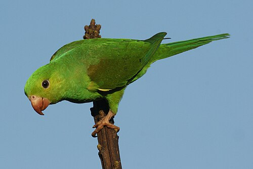
Простой попугайчик
Brotogeris tiricaПризнаки: маленький целиком зелёный попугайчик с заострённым хвостом, синеватым отливом на крыльях и бледным клювом. Летает шумными стайками, резкие трескучие крики.
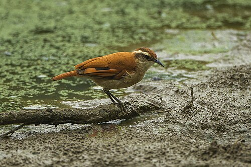
Полосатокрылый печник
Furnarius figulusПризнаки: похож на рыжего печника, но мельче и темнее, с рыжей шапочкой и заметной белёсой полосой на крыле в полёте. Ходит по илистым берегам озёр, качая хвостом.
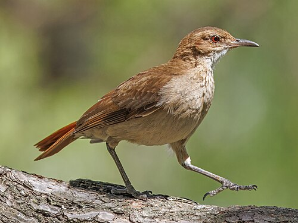
Рыжий печник
Furnarius rufusПризнаки: размером с дрозда, целиком рыжевато-коричневый, хвост ярче спины, светлое горло. Ходит по газонам как «маленькая курица». Строит из глины гнёзда-печки на столбах и ветках, их видно повсюду.
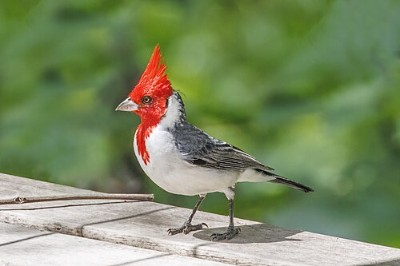
Красноголовый кардинал
Paroaria coronataПризнаки: ярко-красная голова с хохлом и красное горло, серая спина, белое брюхо. Ни с кем не спутать. Единственное место в Сан-Паулу, где он встречается регулярно (популяция от улетевших клеточных птиц).
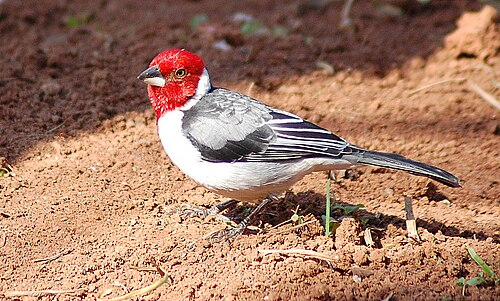
Краснокапюшонный кардинал
Paroaria dominicanaПризнаки: как красноголовый кардинал, но без хохла, красная голова более «гладкая», спина серо-чёрная с белыми пестринами. Родом с северо-востока Бразилии, здесь тоже из бывших клеточных птиц.
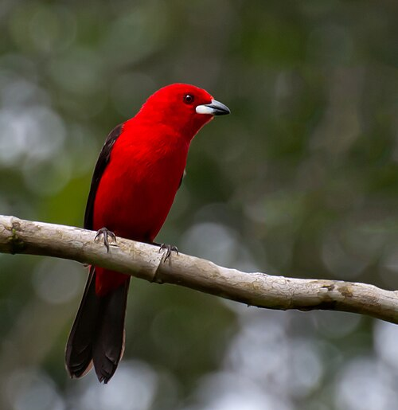
Бразильская танагра
Ramphocelus bresiliusПризнаки: самец ослепительно алый с чёрными крыльями и хвостом, у основания клюва серебристо-белое пятно. Самка буро-рыжая с красноватым низом. Держится парами в кустах у воды.
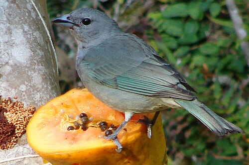
Танагра сайяка
Thraupis sayacaПризнаки: размером с воробья с небольшим, вся голубовато-серая, крылья с зеленовато-бирюзовым отливом. Южный «двойник» колумбийской синей танагры, в Колумбии её нет.
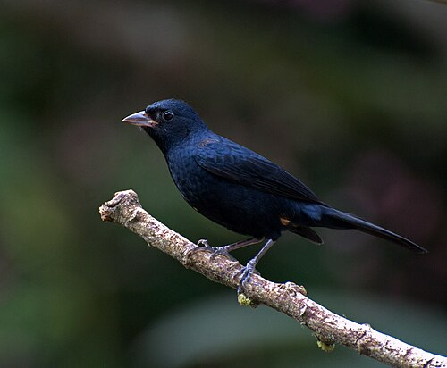
Рубиновошапочная танагра
Tachyphonus coronatusПризнаки: самец бархатно-чёрный с белым пятном под крылом, рубиновая «шапочка» скрыта и видна редко. Самка рыже-коричневая. Тихая, держится в подлеске.
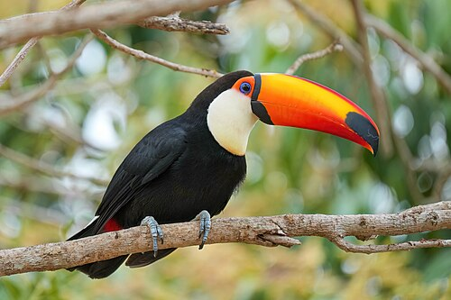
Токо-тукан
Ramphastos tocoПризнаки: самый большой тукан: огромный оранжевый клюв с чёрным пятном на конце, чёрное тело, белое горло, голубая кожа вокруг глаза. Летает тяжело, «рывками». В парке отмечается нерегулярно, но бывает.
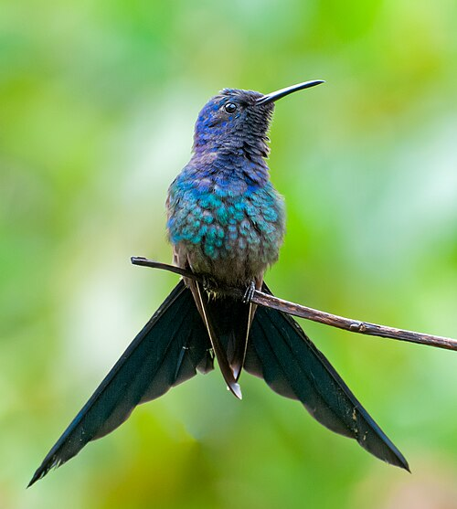
Вилохвостый колибри
Eupetomena macrouraПризнаки: крупный (для колибри) тёмный колибри с синей головой и грудью, зелёным телом и длинным глубоко вырезанным «ласточкиным» хвостом. Агрессивно гоняет всех от цветущих деревьев.
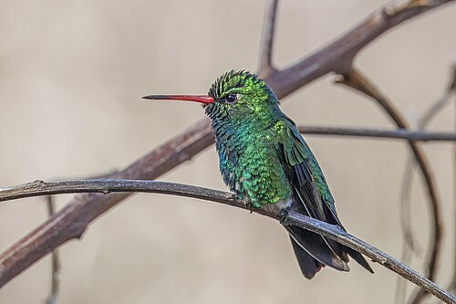
Блестящебрюхий изумруд
Chlorostilbon lucidusПризнаки: мелкий колибри, самец весь сверкающе-зелёный с синеватым горлом, хвост синевато-чёрный, клюв красный с чёрным кончиком. Самка серая снизу с белой полоской за глазом.
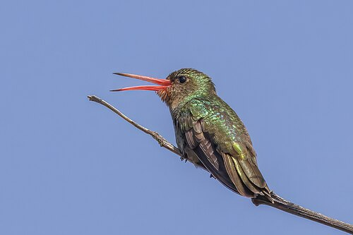
Золотистый сапфир
Hylocharis chrysuraПризнаки: колибри золотисто-зелёного цвета с бронзовым отливом, рыжеватое горло, коралловый клюв с чёрным кончиком. Спокойнее вилохвостого, сидит на открытых веточках.
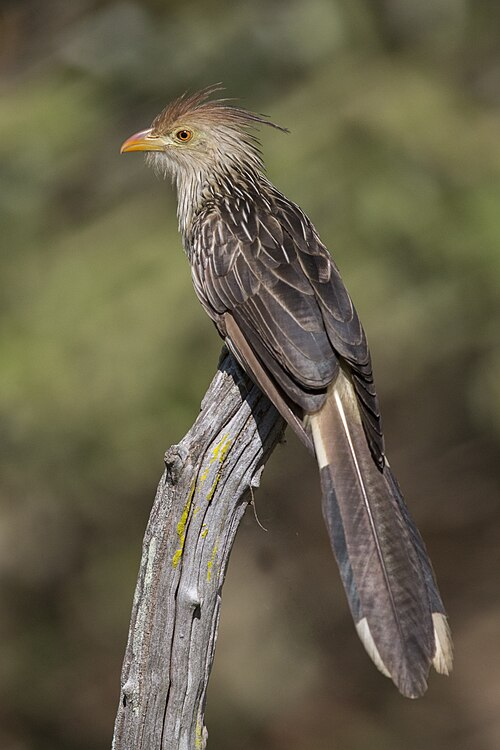
Гуира
Guira guiraПризнаки: взлохмаченная рыжая «причёска», оранжевый клюв, полосатая спина, длинный хвост. Ходят группами по 5–15 птиц по газонам, сидят рядком на заборах. Родственник ани, но выглядит совсем иначе.
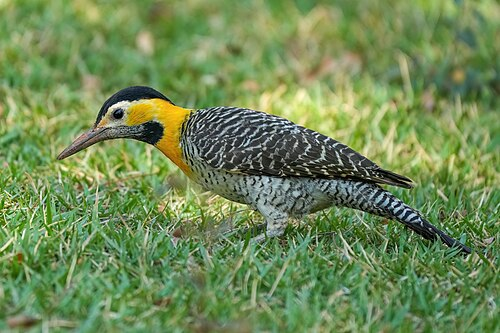
Полевой дятел
Colaptes campestrisПризнаки: крупный дятел, кормится на земле муравьями. Золотисто-жёлтая грудь и шея, чёрная шапочка, полосатая спина, чёрное «нагрудник». Громкое «уик-уик-уик».
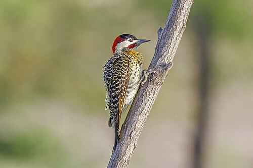
Зеленополосый дятел
Colaptes melanochlorosПризнаки: зеленовато-жёлтый дятел с чёрными поперечными полосами на спине, красный затылок, чёрные пятна на светлом брюхе. Сидит на стволах и на земле.
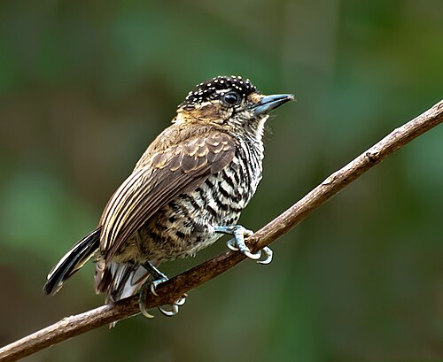
Белополосый дятелок
Picumnus cirratusПризнаки: крошечный (10 см) дятел, снизу весь в тонких чёрно-белых полосках, у самца красные точки на лбу. Ползает по тонким веточкам как синица, тихий «ци-ци».
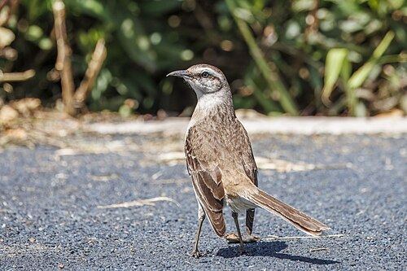
Белобровый пересмешник
Mimus saturninusПризнаки: серо-бурый, с широкой белой бровью и длинным хвостом с белыми уголками. Сидит на верхушках кустов и столбах, громко и разнообразно поёт. Колумбийский тропический пересмешник заметно светлее и без такой брови.
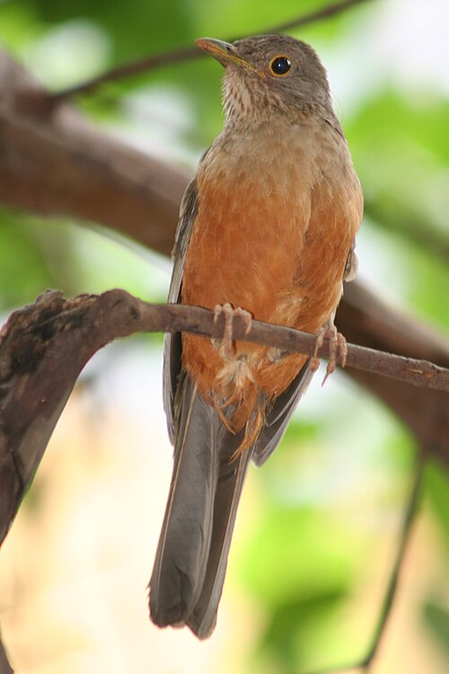
Рыжебрюхий дрозд
Turdus rufiventrisПризнаки: национальная птица Бразилии. Оливково-бурый сверху, рыжее брюхо, жёлтое кольцо вокруг глаза. В сентябре активно поёт: мелодичные флейтовые фразы.
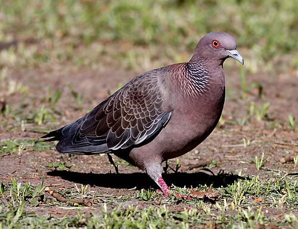
Пикасуро
Patagioenas picazuroПризнаки: крупный голубь с винно-серой грудью, чешуйчатым рисунком на шее и белой полоской по краю крыла в полёте. Глухое «ху-ху-хууу».
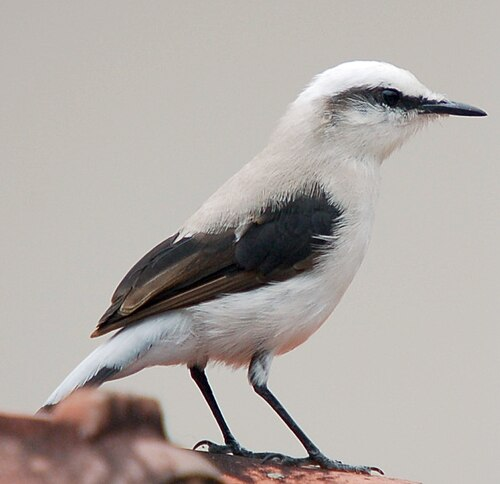
Масковый водяной тиран
Fluvicola nengetaПризнаки: белая птичка размером с трясогузку с чёрной «маской» через глаз, чёрными крыльями и хвостом. Ходит по самой кромке воды и по листьям кувшинок. В Колумбии его заменяет пегий водяной тиран (Pied Water-Tyrant) с чёрной спиной.
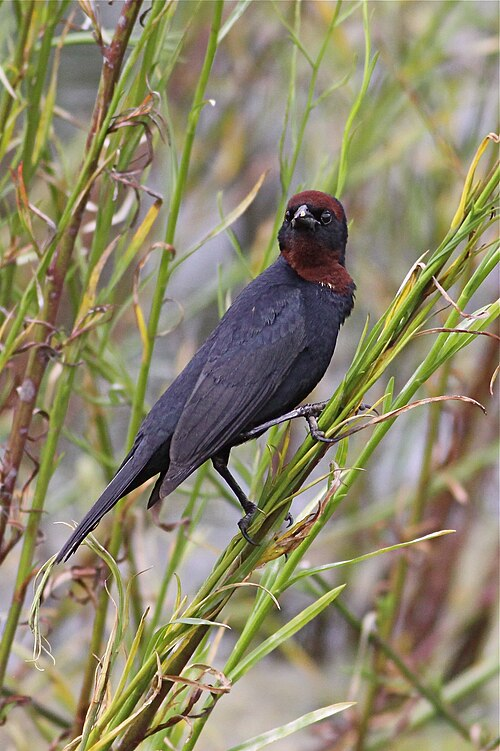
Каштановошапочный трупиал
Chrysomus ruficapillusПризнаки: чёрный, у самца каштановые шапочка и горло (видны на солнце). Стаями в тростнике и на мокрых лугах, скрипучая песня.
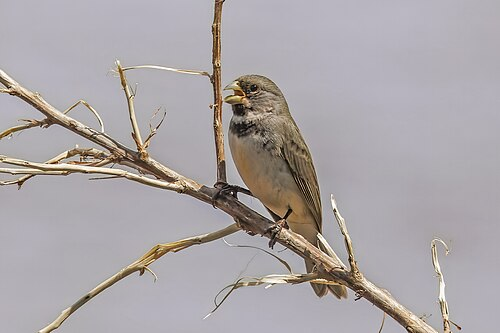
Двуошейниковая овсянка
Sporophila caerulescensПризнаки: крошечная зерноядная птичка. Самец серый сверху, белый снизу, с чёрной маской, белым «усом» и чёрной полосой поперёк груди, клюв жёлтый. В высокой траве у воды.
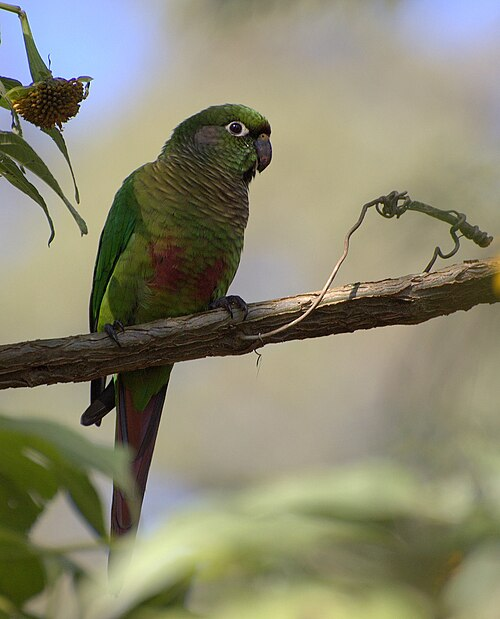
Бурогрудая аратинга
Pyrrhura frontalisПризнаки: зелёный попугай среднего размера с длинным бордовым хвостом, чешуйчатой серо-жёлтой грудью и бордовым пятном на животе. Стайки, пронзительные крики. Типичный вид Атлантического леса.
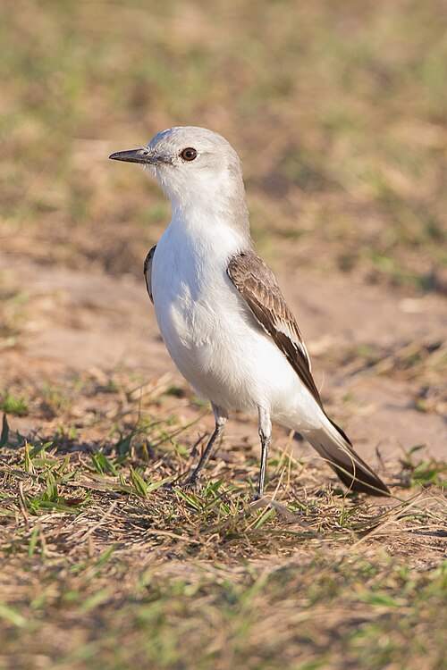
Белопоясничная монжита
Xolmis velatusПризнаки: светло-серая, почти белая мухоловка с чёрными крыльями и белым надхвостьем. Сидит открыто на низких столбиках и кустах на лугах, «ныряет» за насекомыми.
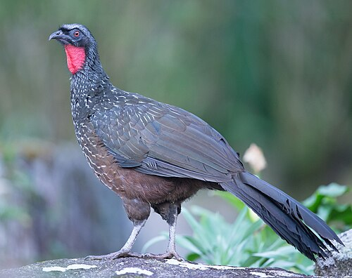
Темноногий гуан
Penelope obscuraПризнаки: крупная (70 см) тёмная «лесная индейка» с красным горловым мешком и белыми штрихами на груди. Ходит по земле и по толстым ветвям, шумно взлетает. В Bosque Maia их видят регулярно (по-португальски jacu).
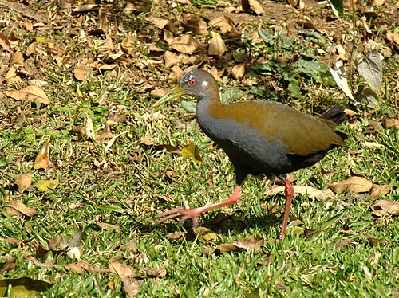
Серогрудый лесной пастушок
Aramides saracuraПризнаки: крупный пастушок с серой грудью, оливковой спиной, рыжим низом, длинными красными ногами и жёлто-зелёным клювом. Ходит по лесной подстилке у ручьёв, дёргая хвостом. Очень громкий дуэт «сара-кура, сара-кура».
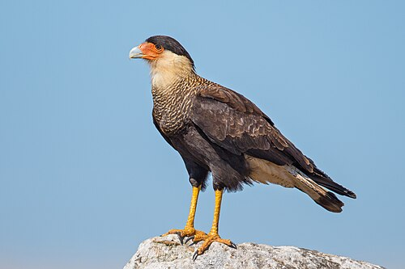
Каракара
Caracara plancusПризнаки: Крупная хищная птица с длинными ногами, чёрной шапочкой, светлой шеей и полосатой грудью, лицо голое оранжево-красное. Ходит по земле, как курица, часто сидит на столбах и деревьях у озёр. eBird с 2023 года объединяет её с северной хохлатой каракарой в один вид Crested Caracara; южная форма отличается более полосатой спиной.
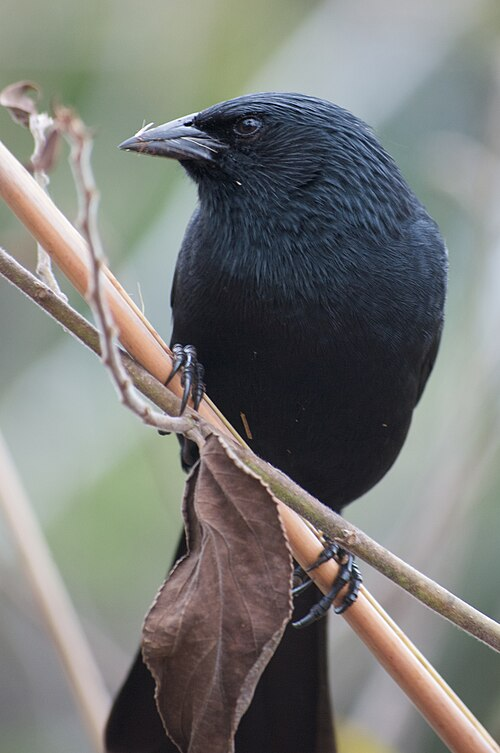
Чопи
Gnorimopsar chopiПризнаки: Целиком чёрный трупиал размером со скворца с блестящим оперением и мощным чёрным клювом с бороздками у основания. Ходит группами по газонам, очень громко и мелодично свистит, за что и назван по звуку «чопи».
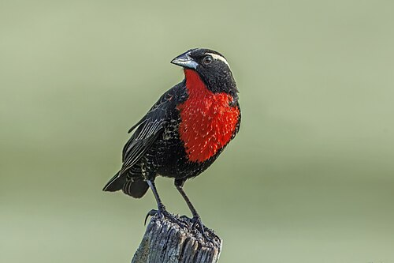
Белобровый луговой трупиал
Leistes superciliarisПризнаки: Самец ослепительно алый снизу от горла до брюха, сверху тёмно-бурый с белой бровью. Сидит на верхушках травы и низких кустах во влажных лугах, взлетает с песней. Самка бурая с розоватым оттенком на груди.
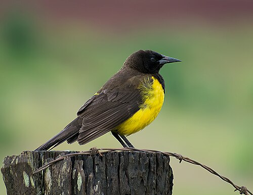
Желтопоясничный болотный трупиал
Pseudoleistes guirahuroПризнаки: Крупный трупиал: чёрно-бурый сверху, ярко-жёлтые грудь, брюхо и поясница. Держится стайками, ходит по мокрой траве, громко скрипит. Ни с кем в парке не спутать.
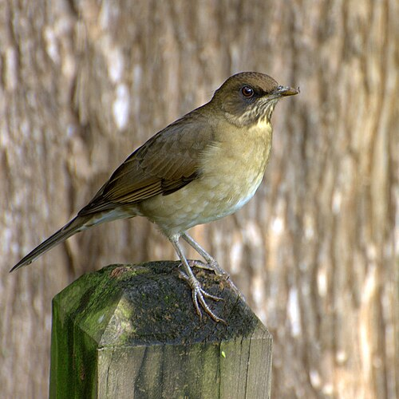
Кремовобрюхий дрозд
Turdus amaurochalinusПризнаки: Серо-оливковый дрозд с кремовым брюхом, тёмной «уздечкой» между клювом и глазом и жёлтым клювом у самца. Похож на рыжебрюхого дрозда, но без рыжины. Много поёт весной, песня богаче и быстрее.
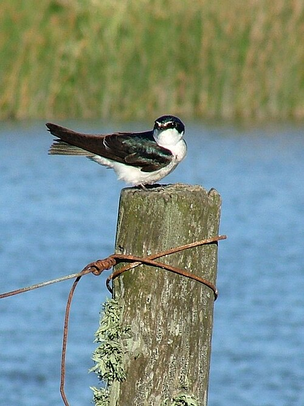
Белопоясничная ласточка
Tachycineta leucorrhoaПризнаки: Ласточка с сине-зелёным верхом, чисто белым низом и заметной белой полосой над хвостом, которая видна в полёте. Белая бровь. Низко носится над водой и лугами, садится на провода.
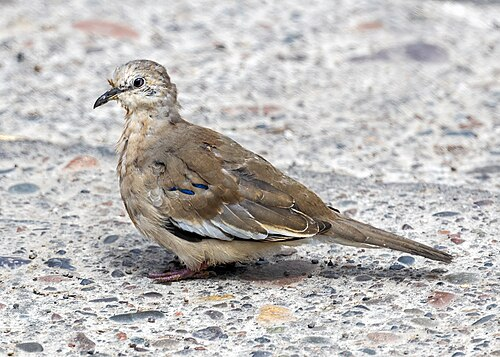
Пикуи
Columbina picuiПризнаки: Маленькая светло-серая голубка с белой полосой на крыле и белыми боками хвоста, заметными при взлёте. Ходит парами по дорожкам, взлетает с сухим шелестом. Светлее и серее рыжей земляной горлицы.
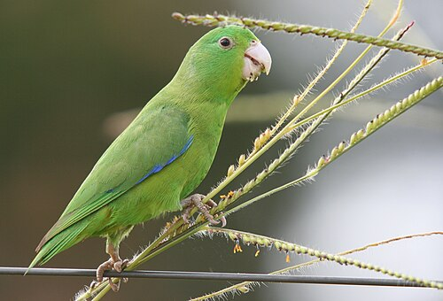
Синекрылый воробьиный попугайчик
Forpus xanthopterygiusПризнаки: Крошечный (12 см) зелёный попугайчик с коротким хвостом, у самца синие крылья и поясница. Стайки быстро проносятся с высоким щебетом и садятся на плодоносящие деревья. В Колумбии его заменяет очковый попугайчик.
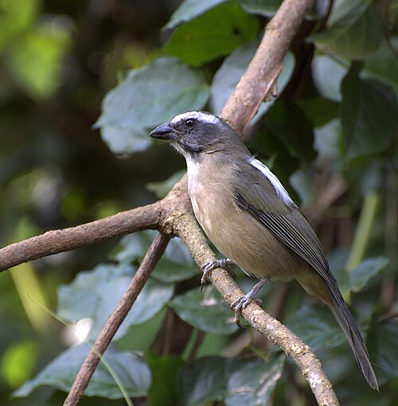
Зеленокрылый салтатор
Saltator similisПризнаки: Крупная зерноядная птица с толстым клювом: оливково-зелёный верх, серая грудь, белое горло и длинная белая бровь. Поёт из густых кустов чистыми свистами, сама на виду нечасто.
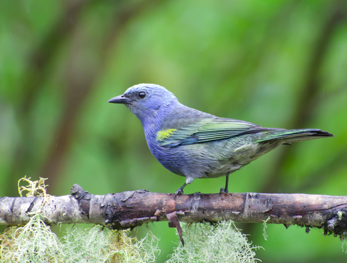
Золотистокрылая танагра
Thraupis ornataПризнаки: Похожа на сайяку, но темнее, с оливково-серым телом и ярким жёлтым «эполетом» на плече. Эндемик Атлантического леса, в садах Сан-Паулу одна из самых обычных танагр.
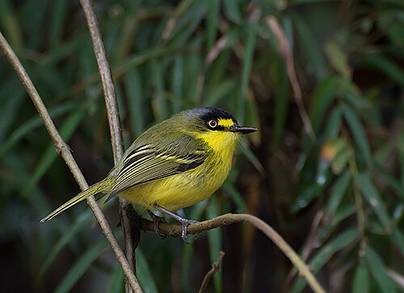
Желтолицый тоди-мухолов
Todirostrum poliocephalumПризнаки: Крошечная (9 см) птичка с чёрной шапочкой, ярко-жёлтым низом и жёлтым пятном перед глазом. Активно прыгает в кронах, издавая сухую трель. Эндемик Атлантического леса, в городах Сан-Паулу обычен.
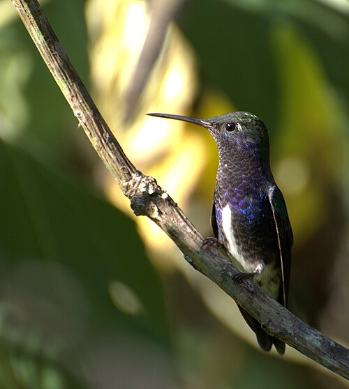
Сапфировогрудый изумруд
Chionomesa lacteaПризнаки: Мелкий колибри, зелёный сверху, с сине-фиолетовым горлом и грудью и белой полосой по центру брюха. Прямой чёрный клюв с розоватым основанием. Один из самых обычных колибри в парках Сан-Паулу.
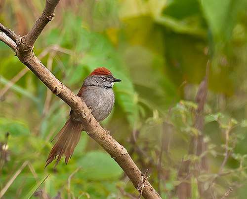
Серолобая иглохвостка
Synallaxis frontalisПризнаки: Мелкая скрытная птица из семейства печниковых: рыжая шапочка и крылья, серый лоб, длинный ступенчатый хвост. Держится низко в густой траве и кустах, выдаёт себя резким двусложным криком.
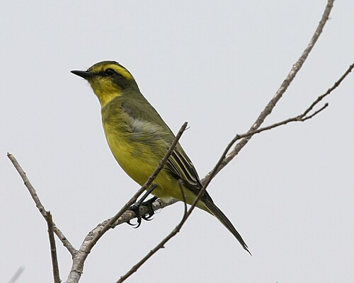
Желтобровый тиран
Satrapa icterophrysПризнаки: Мухоловка с ярко-жёлтым низом, оливковой спиной, чёрной маской через глаз и широкой жёлтой бровью. Сидит открыто на кустах у воды и «ныряет» за насекомыми. Похожа на кискади, но мельче и стройнее.
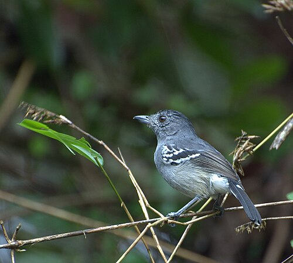
Изменчивый муравьеловковый сорокопут
Thamnophilus caerulescensПризнаки: Самец серый с чёрной шапочкой и белыми пестринами на крыльях, самка рыже-оливковая. Крючковатый клюв. Лазает в подлеске парами, часто отзывается на пишинг. Песня: ускоряющаяся серия «ко-ко-ко-ко».
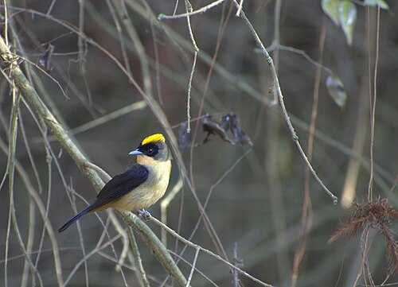
Черноокая танагра
Trichothraupis melanopsПризнаки: Оливково-бурая танагра с кремово-жёлтым низом, у самца чёрная маска «очки» вокруг глаз и жёлтая полоса на темени, видная при возбуждении. Ходит в смешанных стаях в подлеске, часто у муравьиных колонн.
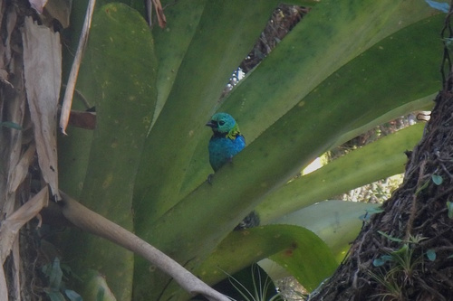
Зеленоголовая танагра
Tangara seledonПризнаки: Одна из самых красивых птиц региона: бирюзово-зелёная голова, оранжевая поясница, чёрная спина с зелёными и синими участками. Стайки в кронах, тихие щебечущие позывки. В городских парках редка, но встречается.
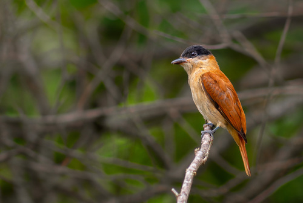
Хохлатый бекард
Pachyramphus validusПризнаки: Самец тёмно-серый с почти чёрной шапочкой и небольшим хохлом, самка рыже-коричневая с чёрной шапочкой. Крупнее других бекардов, строит большие шарообразные гнёзда на концах ветвей.
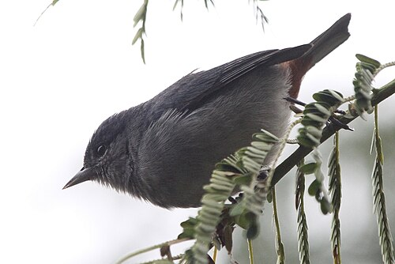
Каштановобрюхий конебилл
Conirostrum speciosumПризнаки: Мелкая (11 см) птичка с тонким острым клювом: самец сине-серый с каштановым подхвостьем, самка оливковая с серой головой. Прыгает в кронах деревьев, собирая насекомых с листьев.
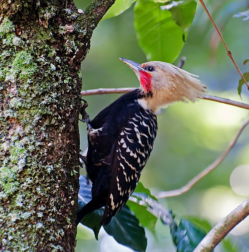
Желтохохлый дятел
Celeus flavescensПризнаки: Эффектный дятел: кремово-жёлтая голова с пышным хохлом, тёмное тело, у самца красная «щека». Кормится термитами на стволах и на земле, громкий свистящий крик. Типичен для Атлантического леса.
Фон: водоплавающие и болотные
Бразильский чирок, белолицая и краснозобая свистящие утки, лимпкин, якана, улитковый коршун, змеешейка, бразильский баклан, большая белая и снежная цапли, южная пигалица, свистящая цапля. Плюс вилохвостые тиранны (Fork-tailed Flycatcher): в сентябре они как раз прилетают гнездиться и висят над лугами с 30-сантиметровыми хвостами.
Где поесть
Спокойная, «диетическая» еда без fine dining, всё открыто в 14:00 и близко к аэропорту. Рейтинги и часы перед выездом сверьте в Google Maps: они меняются.
Coco Bambu Guarulhos
1-й выборрыба на гриле12:00–23:00 ежедневно★ 4.5–4.7 · более 15 000 отзывов
Большая сеть с морепродуктами и рыбой, спокойные залы, никакого дресс-кода. Берите peixe grelhado (рыба на гриле) с овощами и рисом, salada или moqueca без излишеств. Порции огромные и рассчитаны на двоих, заказывайте одну на пару.
| Адрес | Parque Shopping Maia, Av. Bartholomeu de Carlos, 230 (этаж G1), Guarulhos |
|---|---|
| От Parque Ecológico do Tietê | ~10 км, Uber 20–25 мин (R$ 40–60). Пешком не вариант. |
| От Bosque Maia | ~2 км, Uber 5–7 мин или 25 мин пешком по Av. Paulo Faccini. |
| До GRU | ~7 км, 12–20 мин |
| Ссылки | Google Maps · сайт |
Pé No Bosque
здоровая едау парка Bosque Maia★ высокий рейтинг · небольшое место
Маленькое кафе «здоровой кухни» через дорогу от Bosque Maia: салаты, боулы, гриль, свежие соки. Самый «диетический» вариант из трёх. Работает Пн–Вт 12:00–19:00, Ср–Пт 12:00–21:00, Сб 10:00–16:00, в воскресенье закрыто. 30 сентября среда, открыт с 12:00.
| Адрес | Rua Brás Cubas, 418 – Jardim Maia, Guarulhos |
|---|---|
| От Parque Ecológico do Tietê | ~9 км, Uber 20–25 мин (R$ 40–60). Пешком не вариант. |
| От Bosque Maia | Через дорогу, 3–5 мин пешком. |
| До GRU | ~6 км, 12–18 мин |
| Ссылки | Google Maps · Instagram |
Ráscal (Терминал 3, мезонин)
запасной, в аэропортубуфет салатов11:30–22:00★ 4.3–4.5 · известная сеть Сан-Паулу
Буфет средиземноморской кухни: большая стойка салатов, овощи на пару, рыба и курица на гриле, паста. Расположен в Терминале 3 до зоны досмотра, то есть доступен по пути из парка в Т2. Идеальный вариант, если времени в обрез: ехать из парка сразу в аэропорт и есть здесь.
| Адрес | GRU Airport, Terminal 3, Mezanino (общая зона) |
|---|---|
| От Parque Ecológico do Tietê | ~9 км, Uber 15–25 мин (R$ 35–60) до Т3. |
| До Т2 | 5–7 мин пешком |
| Ссылки | сайт (адреса) |
Перекус в аэропорту сразу по прилёту
Если хочется поесть до выезда в город, всё есть в общей зоне Терминала 3, до выхода из здания.
- Уровень прилёта, у выхода из таможни: Casa do Pão de Queijo (круглосуточно: сырные булочки пан-де-кейжу, кофе, соки, бутерброды), рядом Starbucks. Самый быстрый вариант, 5 минут.
- Мезонин, этажом выше: Ráscal (буфет салатов и гриля, с 11:00), Burger King, Bob's (бразильский аналог Макдональдса), Baked Potato, Café Suplicy (круглосуточно), Arabia Express, Carl's Jr., Pizza Hut.
- McDonald's в Т3 нет, он в Терминале 2 (в том числе в зоне прилёта). Идти 5–7 минут по переходу, то есть 15 минут туда-обратно.
Быстрый перекус в 11:15 даёт выбор: отказаться от обеда в городе и отдать птицам все 3 часа, либо спокойнее доехать до ресторана к 14:00.
Карта
Аэропорт, парк и район обеда. Метки приблизительные, для навигации используйте адреса выше.
Маршруты в Google Maps: GRU T3 → парк · парк → Parque Shopping Maia · Shopping Maia → GRU T2
План Б
Вышли из аэропорта позже 12:15
Едьте сразу в Bosque Maia (12–15 мин): час-полтора на птиц в лесу, обед через дорогу в Pé No Bosque или в Coco Bambu, и вы в 15 минутах от Т2. Parque Ecológico do Tietê в этом сценарии пропускаем.
Вышли позже 13:00
В город не выезжайте. Терминал 3: обед в Ráscal, потом Т2. Птицы вокруг аэропорта: с этажа вылета видны южные пигалицы, гуиры и рыжие печники на газонах, ани в кустах.
Дождь
Конец сентября в Сан-Паулу: начало дождливого сезона, ливни обычно короткие и во второй половине дня. Возьмите лёгкие дождевики; после ливня птицы активнее. Если льёт с утра, Bosque Maia под кронами комфортнее открытых озёр.
Рейс Qatar опаздывает на час и больше
Смотрите на часы в момент выхода из зоны прилёта и выбирайте сценарий выше. Возврат в Т2 к 15:15 остаётся неизменным.
Чек-лист до вылета из Ларнаки
- Установить Uber и 99, привязать карту, проверить, что аккаунт работает.
- eSIM с бразильским трафиком или международный роуминг.
- Merlin Bird ID: скачать пакет Brazil: Southeast. eBird: сохранить хотспот Parque Ecológico do Tietê.
- В Ларнаке на стойке: бирка багажа до BOG и посадочные на все три сегмента. Онлайн-регистрация Avianca открывается за 24 часа.
- Бинокль, шляпа, вода, крем от солнца, лёгкий дождевик в ручную кладь.
- Сохранить эту страницу офлайн (в браузере «Добавить на главный экран» или PDF).
- Накануне проверить в Google Maps, что Coco Bambu и Pé No Bosque открыты в среду 30 сентября.